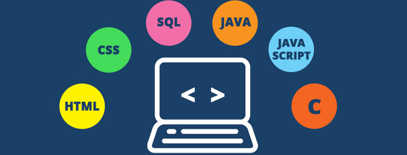

1. Dasar-dasar Komputer dan Pemrograman:
Mempelajari arsitektur komputer, bahasa
pemrograman (seperti C, Java, Python),
dan algoritma.
2. Jaringan Komputer:
Meliputi konsep TCP/IP, routing, switching,
dan protokol jaringan. Juga termasuk desain
dan implementasi jaringan lokal (LAN),
jaringan area luas (WAN), dan jaringan nirkabel.
3. Keamanan Jaringan:
Mempelajari metode untuk melindungi data
dan infrastruktur jaringan dari ancaman,
seperti enkripsi, firewall, dan sistem deteksi
intrusi.
4. Manajemen Sistem Jaringan:
Mengelola dan memelihara sistem jaringan,
termasuk pengelolaan server, perangkat keras,
dan perangkat lunak jaringan.
5. Komunikasi Data dan Telekomunikasi:
Meneliti cara data dikirimkan dan diterima
melalui jaringan, termasuk teknologi seperti
VoIP (Voice over IP) dan komunikasi satelit.
6. Cloud Computing dan Virtualisasi:
Menjelajahi konsep cloud computing, layanan
berbasis cloud, dan teknologi virtualisasi yang
memungkinkan efisiensi penggunaan sumber daya.
7. Internet of Things (IoT):
Memahami bagaimana perangkat terhubung
dan berkomunikasi melalui jaringan, serta
aplikasi praktisnya dalam berbagai bidang.
8. Pemrograman Jaringan:
Menulis dan mengembangkan perangkat
lunak untuk mengelola dan mengoptimalkan
jaringan.
9. Proyek dan Praktikum:
Mengikuti proyek dan praktik langsung untuk
menerapkan teori yang telah dipelajari dalam
situasi nyata.